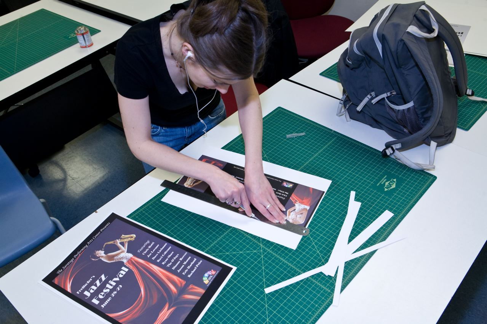
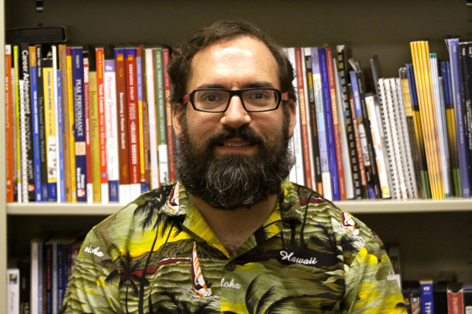

The South Hills Graphic Arts program prepares you for a lifelong career communicating visually…
through print, web, interactive and social media, illustration and more.
Two-Year Associate in Specialized Technology (AST) Degree Program
The South Hills Graphic Arts program prepares you for a lifelong career communicating visually…through print, web, interactive and social media, illustration and more.
You’ll begin designing from day one. Using state of the art software and resources, the Graphic Arts program will train you in typography, web design, logo design and corporate identity, packaging, publication design, advertising design, collateral design, color theory and more.
You’ll study the history of design, learning from the past while striding into the future. A small class size, low student-to-instructor ratio and a “no-fluff” curriculum ensure we will tap into your true potential and bring out your creative best!
The Graphic Arts program at South Hills is taught by faculty who are both seasoned educators and working professional designers, with experience in every facet of the field—from designing web sites, publications, annual reports, advertising campaigns, corporate identity, CD packaging and outdoor advertising to copywriting, packaging, art direction and videography.
At the end of the program, you will graduate with a versatile, well-rounded print portfolio and web site, ready to “hit the ground running” as you launch your career in the field of graphic arts.
Successful students in this program will be self-motivated and driven, creative, receptive to constructive feedback and have a strong work ethic.
Ray Liddick Jr.
GA Program Coordinator / Full-time Instructor
Jim Colbert
Full-time Instructor
Rick Gority
Instructor

Luciano Sormani
Adjunct Instructor